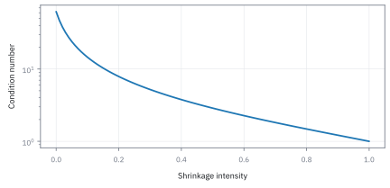
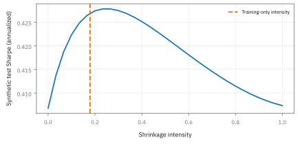
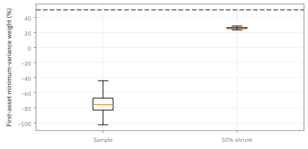

17.8 Covariance Shrinkage (Ledoit-Wolf)
optimizer เทเงินไปที่ความคลาดเคลื่อนของค่าที่ประมาณ การดึงค่าเฉลี่ยและ covariance เข้าหาสิ่งที่เรียบง่ายยอมเบี้ยวนิดหนึ่งเพื่อแลกกับความนิ่งมาก และ Ledoit-Wolf เลือกว่าจะดึงแรงแค่ไหนจากข้อมูลเอง
ไฟล์ Assignment 2 ให้ผลตอบแทนรายเดือน 60 เดือนของสามสินทรัพย์ พอร์ต tangency ที่คำนวณจากค่าเฉลี่ยและ covariance ที่ประมาณได้สัญญา Sharpe ratio 0.864 สูงกว่าที่พอร์ตดีที่สุดของค่าจริงทำได้ (0.851) เสียอีก ถ้าค่าจริงคือค่าในแผ่นแรกของไฟล์ (ค่าเฉลี่ย 6%, 2% และ 4%) พอร์ตนี้ได้จริงเท่าไร และแก้อย่างไรที่ง่ายที่สุด?
ลองตอบก่อนเปิดเฉลย
ได้จริง 0.586 ต่ำกว่าที่ทำได้หนึ่งในสาม เพราะ optimizer เทเงิน 78% ไปที่ตัวที่ค่าเฉลี่ยถูกประมาณสูงเกินที่สุด ทางแก้ที่ง่ายที่สุดคือดึงค่าเฉลี่ยทั้งสามให้เท่ากันหมด ได้ Sharpe จริง 0.834 เกือบเท่าที่ดีที่สุด เพราะ optimizer เหลือแต่ covariance ซึ่งประมาณได้แม่นกว่ามาก
สิ่งที่เราจะสร้าง
17.3 เห็นแล้วว่าน้ำหนัก tangency ขยับราว 4.3 จุดต่อ 1 จุดของค่าเฉลี่ย และไฟล์แปดกลุ่มให้น้ำหนัก 568% ส่วน 17.4 เห็นว่า inverse ขยายทิศที่ eigenvalue เล็ก 56 เท่า หน้านี้แก้ปัญหานั้น: เมื่อตัวเลขที่ป้อนมีเสียงรบกวน ให้ดึงมันเข้าหาสิ่งที่นิ่งกว่า
เริ่มจากการทดลองในความคิดว่าทำไม optimizer เลือกข้างที่ผิดเสมอ วัดว่าค่าเฉลี่ยห้าปีคลาดได้แค่ไหน ดูไฟล์ Assignment 2 ดึงค่าเฉลี่ยเข้าหากัน แล้วทำแบบเดียวกันกับ covariance: ดูว่าการผสมกับ identity ทำอะไรกับ eigenvalue ลองกับสองสินทรัพย์ที่เกือบเป็นตัวเดียวกัน คิดความเข้มแบบ Ledoit-Wolf ด้วยมือจากข้อมูลสี่วัน และจบที่ข้อมูลที่เป็นเสียงรบกวนล้วน
ศัพท์ที่ใช้ในหัวข้อนี้
- Estimation error
- ความต่างระหว่างค่าที่ประมาณจากข้อมูลกับค่าจริงที่มองไม่เห็น ใช้อธิบายว่าทำไมพอร์ตที่ดีที่สุดบนกระดาษทำได้จริงแย่กว่า
- Error maximizer
- ชื่อที่ Richard Michaud เรียก mean-variance optimizer เพราะมันเทน้ำหนักไปที่ตัวที่ค่าเฉลี่ยถูกประมาณสูงเกินและความเสี่ยงถูกประมาณต่ำเกิน
- Shrinkage
- การผสมค่าที่ประมาณได้กับโครงสร้างที่เรียบกว่า ด้วยน้ำหนัก $\delta$ ยอมให้ค่าเบี้ยว (bias) นิดหนึ่งเพื่อลดการแกว่งของค่าประมาณมาก
- Target (เป้าหมายของการผสม)
- matrix ที่ดึงเข้าหา หน้านี้ใช้ $mI$ คือ variance เท่ากันทุกตัวและ covariance เป็นศูนย์ บางงานใช้ correlation เท่ากันทุกคู่แทน ต้องบอกเสมอว่าใช้ตัวไหน
- Ledoit-Wolf
- สูตรเลือกความเข้ม $\delta$ จากข้อมูล: เทียบว่า matrix ที่ประมาณสั่นแค่ไหนกับว่ามันห่างจาก target แค่ไหน
- Condition number
- eigenvalue ที่ใหญ่ที่สุดหารด้วยที่เล็กที่สุดของ matrix บวกแน่นอน ใช้วัดว่าการแก้ระบบด้วย matrix นี้ขยายความคลาดเคลื่อนได้กี่เท่า
สัญลักษณ์และหน่วย
| สัญลักษณ์ | ความหมาย | หน่วย |
|---|---|---|
| $\mu,\ V$ | ค่าเฉลี่ยและ covariance จริง (แผ่นแรกของไฟล์) | ต่อปี |
| $\hat\mu,\ \hat V$ | ค่าที่ประมาณจาก 60 เดือน (แผ่นที่สอง) | ต่อปี |
| $\alpha$ | น้ำหนักที่ให้ค่าเฉลี่ยที่ประมาณ เมื่อดึงเข้าหาค่าเฉลี่ยรวม | สัดส่วน |
| $S$ | sample covariance | ผลตอบแทนกำลังสอง |
| $m$ | ค่าเฉลี่ยของแนวทแยงของ $S$ | ผลตอบแทนกำลังสอง |
| $\delta$ | ความเข้มของการผสมกับ $mI$ (0 ไม่ดึง 1 ใช้ target ล้วน) | สัดส่วน |
| $\widehat\Sigma_\delta$ | $(1-\delta)S+\delta mI$ | ผลตอบแทนกำลังสอง |
| $\lambda_i$ | eigenvalue ของ $S$ | ผลตอบแทนกำลังสอง |
| $\kappa$ | condition number | เท่า |
| $x_t$ | vector ผลตอบแทนวันที่ $t$ (ค่าเฉลี่ยศูนย์) | สัดส่วน |
| $n,\ p$ | จำนวนวัน และจำนวนสินทรัพย์ | ตัว |
| $d^2$ | ระยะกำลังสองจาก $S$ ถึง target | ผลตอบแทนกำลังสี่ |
| $\bar b^2$ | ขนาดการสั่นของ $S$ ที่ประมาณจากข้อมูล | ผลตอบแทนกำลังสี่ |
ขั้นที่ 1 — ลองด้วยมือ: สองสินทรัพย์ที่เหมือนกันทุกอย่าง
สไลด์ของคอร์สให้การทดลองในความคิด: สองสินทรัพย์ค่าเฉลี่ยจริง 5% ความผันผวน 20% เท่ากัน ไม่สัมพันธ์กัน เงินสด 1% ค่าที่ประมาณได้ของตัวแรกสูงไป 1 จุด ตัวที่สองต่ำไป 1 จุด ความคลาดเฉลี่ยเป็นศูนย์ เมื่อ covariance เป็น $0.04I$ ทิศของ tangency คือส่วนเกินเงินสดตรง ๆ (17.3)
คำตอบที่ถูกคือแบ่งครึ่ง optimizer กลับเทเงินไปที่ตัวที่ถูกประมาณสูงเกิน ซึ่งผิดทางพอดี พอร์ตสัญญา 0.2915 แต่ได้จริง 0.2744 แย่กว่าการแบ่งครึ่งเฉย ๆ
ความคลาดที่เฉลี่ยเป็นศูนย์ไม่หักล้างกันในพอร์ต เพราะ optimizer ไม่ได้สุ่มเลือก มันเลือกข้างที่ความคลาดเป็นบวกเสมอ ตัวเลขที่ optimizer สัญญาจึงสูงเกินจริงเสมอ
ขั้นที่ 2 — ทำไมค่าเฉลี่ยประมาณยากกว่า covariance มาก
ค่าเฉลี่ยรายปีที่ได้จาก 60 เดือนคือ 12 เท่าของค่าเฉลี่ยรายเดือน ค่าเฉลี่ยของ 60 ตัวมี standard error เป็นความผันผวนหารด้วย $\sqrt{60}$ (3.3) ใช้ความผันผวนจริงจากแนวทแยงของ $V$
ความผันผวนรายเดือนคือรายปีหารด้วย $\sqrt{12}$ จึงได้บรรทัดแรก ห้าปีของข้อมูลบอกค่าเฉลี่ยได้แค่บวกลบ 4 จุด ทั้งที่ค่าเฉลี่ยเองมีขนาดแค่ 2 ถึง 6% สิ่งที่ประมาณได้จึงเกือบเป็นเสียงรบกวนล้วน การเพิ่มความถี่ของข้อมูลไม่ช่วย เพราะ SE ขึ้นกับความยาวของช่วง ไม่ใช่จำนวนจุด
covariance ต่างออกไป: มันเฉลี่ยกำลังสองของการขยับ ข้อมูลที่ถี่ขึ้นช่วยได้ แต่จำนวนตัวที่ต้องประมาณโตเป็นกำลังสอง หุ้น 500 ตัวมี 125,250 ตัว ขณะที่ข้อมูลรายวันหนึ่งปี (250 วันทำการ) มีแค่ $250\times500=125{,}000$ ตัวเลข
ขั้นที่ 3 — ไฟล์ Assignment 2: พอร์ตจากค่าที่ประมาณ วัดด้วยค่าจริง
โจทย์ให้อะไรมาบ้าง: แผ่นที่สองของไฟล์คิดค่าเฉลี่ยต่อปี (AVERAGE คูณ 12) และ covariance ต่อปีจาก 60 เดือน แผ่นแรกให้ค่าจริง $\mu=(6,\ 2,\ 4)\%$ และ $V$ ของ Assignment 1 (17.3 ขั้นที่ 8) เงินสด 1% หาพอร์ต tangency จากค่าที่ประมาณ แล้ววัดด้วยค่าจริง
คำตอบ: covariance ที่ประมาณใกล้ของจริงพอควร (0.0056 เทียบ 0.008 และ −0.0020 เทียบ −0.002) แต่ค่าเฉลี่ยกลับเครื่องหมายสองตัว optimizer เทเงิน 78% ไปที่ตัวที่สองซึ่งดูดีที่สุดในข้อมูล วัดด้วยค่าจริงได้ผลตอบแทน 2.688% ความผันผวน 2.882% Sharpe 0.586 ต่ำกว่า 0.851 ของพอร์ตดีที่สุดจริง (17.3) หนึ่งในสาม
ค่าที่ประมาณของตัวแรกห่างจากค่าจริง $(-0.52-6)/4.0=-1.63$ เท่าของ SE เป็นความคลาดธรรมดาของข้อมูลห้าปี ไม่ใช่ข้อมูลเสีย
ตรวจเองใน 10 วินาที: $0.1267+0.7826+0.0907=1$ และ $(2.688-1)/2.882=0.586$
ขั้นที่ 4 — ดึงค่าเฉลี่ยเข้าหาค่าเฉลี่ยรวม
สไลด์เสนอสูตรแบบ James-Stein: ผสมค่าที่ประมาณของแต่ละตัวกับค่าเฉลี่ยของทุกตัว ด้วยน้ำหนัก $\alpha$ แล้วคิด tangency ใหม่ด้วย $\hat V$ เดิม และวัดด้วยค่าจริงเหมือนขั้นที่ 3
ดึงครึ่งทางได้ Sharpe จริง 0.615 ดึงจนเท่ากันหมดได้ 0.834 เกือบถึง 0.851 เมื่อค่าเฉลี่ยเท่ากันทุกตัว optimizer ไม่มีอะไรให้ไล่ตาม จึงเลือกจาก covariance ล้วน ซึ่งประมาณได้ดีกว่ามาก ในไฟล์นี้การทิ้งข้อมูลค่าเฉลี่ยไปเลยชนะการเชื่อมัน
ขั้นต่อไปใช้ความคิดเดียวกันกับ covariance ซึ่งสไลด์เขียนเป็น $\alpha\hat V+(1-\alpha)mI$ ตรงกับ $\delta=1-\alpha$ ของหน้านี้
Figure 17.8a — frontier ที่ประมาณสัญญาเกินจริง

แกนนอนคือความผันผวน แกนตั้งคือผลตอบแทนคาดหวัง (0 ถึง 8% ทั้งสองแกน) ไม่มีเงินสด เส้นเขียวคือ frontier จากค่าจริงของแผ่นแรก เส้นประน้ำเงินคือ frontier จาก $\hat\mu,\ \hat V$ ของ 60 เดือน เส้นแดงคือพอร์ตชุดเดียวกับเส้นประ แต่วัดด้วยค่าจริง เส้นแดงอยู่ใต้ทั้งสองเส้น และยิ่งไล่ผลตอบแทนตามค่าที่ประมาณ ผลตอบแทนจริงยิ่งลด
ขั้นที่ 5 — ผสม covariance กับ $mI$: eigenvector เดิม eigenvalue ถูกดึงเข้าหากัน
นิยามการผสม: $\widehat\Sigma_\delta=(1-\delta)S+\delta mI$ โดย $m$ คือค่าเฉลี่ยของ variance ทุกตัว target นี้ให้ variance เท่ากันและ covariance เป็นศูนย์ ถามว่าการผสมทำอะไรกับทิศและขนาดของ $S$ (17.4)
จังหวะสำคัญคือบรรทัดที่สอง: $Iq_i=q_i$ ทุกทิศ identity จึงไม่หมุนอะไรเลย ทิศเดิมยังเป็น eigenvector ค่าที่เปลี่ยนคือ eigenvalue ซึ่งถูกดึงเข้าหา $m$ เป็นเส้นตรง
ผลที่ตามมา: eigenvalue ที่เล็กมากถูกยกขึ้นมากเมื่อเทียบกับตัวเอง ตัวที่ใหญ่ถูกกดลงนิดเดียวเมื่อเทียบกับตัวเอง condition number จึงลดลง และถ้า $\delta\gt0$ ทุก eigenvalue เป็นบวก แม้ $S$ เดิมกลับด้านไม่ได้
ขั้นที่ 6 — สองสินทรัพย์ที่เกือบเป็นตัวเดียวกัน
ตัวอย่างรายปี: ความผันผวน 20% และ 10% covariance 0.019 คือ correlation $0.019/(0.20\times0.10)=0.95$ หาพอร์ตเสี่ยงต่ำสุดด้วยสูตรของ 17.3 ขั้นที่ 3 แล้วดู eigenvalue ด้วย trace และ determinant ของ matrix 2×2
พอร์ตเสี่ยงต่ำสุดสั่ง short ตัวแรก 75% และถือตัวที่สอง 175% เพราะสองตัวเกือบเป็นตัวเดียวกัน matrix จึงมีทิศ “ถือตัวหนึ่ง short อีกตัว” ที่ variance วัดได้แค่ 0.000793 (ความผันผวน 2.8% ต่อปี) determinant คือ $0.04(0.01)-0.019^2=0.000039$
การกลับ matrix เอา 1 หารด้วย eigenvalue ทิศนั้นจึงถูกขยาย 1,262 เท่า เทียบกับ 20 เท่าของอีกทิศ optimizer เห็นโอกาสลดความเสี่ยงมหาศาลในทิศนั้น ทั้งที่ 0.000793 คือตัวเลขที่ข้อมูลจำกัดวัดได้แย่ที่สุด
ขั้นที่ 7 — ผสมครึ่งหนึ่งแล้วคิดใหม่
โจทย์ให้อะไรมาบ้าง: $S$ ของขั้นที่ 6 $m=(0.04+0.01)/2=0.025$ และ $\delta=0.5$ (ค่าสาธิต ไม่ใช่ค่าที่ Ledoit-Wolf เลือก) ทุน \$10 ล้าน
คำตอบ: น้ำหนักเปลี่ยนจาก −75% เป็น $8/31=25.81\%$ และตัวที่สอง 74.19% คือ \$2,580,645 กับ \$7,419,355 ไม่ต้อง short เงินรวมสองฝั่งลดจาก \$25 ล้าน (short 7.5 ถือ 17.5) เหลือ \$10 ล้าน eigenvalue เล็กถูกยกขึ้น 16 เท่า ตัวใหญ่ถูกกดลงแค่ 25% condition number จาก 62.1 เหลือ 2.88
ช่องนอกแนวทแยงหดครึ่งหนึ่งพอดี (0.019 เป็น 0.0095) เพราะ target ไม่มี covariance ช่องแนวทแยงขยับเข้าหากัน: shrinkage แตะทิศที่เชื่อไม่ได้แรงที่สุด และแตะทิศที่เชื่อได้เบาที่สุด
ตรวจเองใน 10 วินาที: $2{,}580{,}645+7{,}419{,}355=10{,}000{,}000$ และ $0.037104+0.012896=0.05$ เท่ากับ trace เดิม
Figure 17.8b — การผสมเปลี่ยนคำสั่งจาก matrix เดียวกัน

แกนนอนคือ $\delta$ 0 ถึง 1 แกนตั้งคือน้ำหนักสินทรัพย์แรกของพอร์ตเสี่ยงต่ำสุด เส้นเริ่มที่ −75% ตัดศูนย์ที่ $\delta=0.009/0.034=0.265$ (ที่ 0.25 ยังเป็น −2.3%) ผ่าน 25.81% ที่ 0.5 และจบที่ 50% ที่ $\delta=1$ ซึ่งคือคำตอบของ target ล้วน เส้นนี้บอกว่าน้ำหนักไวต่อ $\delta$ แค่ไหน ไม่ได้บอกว่าน้ำหนักไหนจะชนะในตลาด
Figure 17.8c — Condition number เป็นเรื่องเสถียรภาพทางตัวเลข

แกนตั้งเป็น log condition number ของ $\widehat\Sigma_\delta$ ตามสูตรขั้นที่ 5 เริ่ม 62.1 ที่ $\delta=0$ ลงเหลือ 2.88 ที่ 0.5 และ 1 ที่ $\delta=1$ matrix ที่แก้ระบบง่ายยังอาจเป็นตัวแทนตลาดที่แย่ได้ ตัวเลขนี้วัดความนิ่งของตัวเลข ไม่ใช่ความถูก
ขั้นที่ 8 — Ledoit-Wolf: เลือกความเข้มจากข้อมูลเอง คิดด้วยมือสี่วัน
ควรผสมแรงแค่ไหน? ถ้า $S$ สั่นมากจากวันหนึ่งไปอีกวัน ควรดึงแรง ถ้า $S$ อยู่ไกลจาก target ต่อให้ดึงก็เบี้ยวมาก ควรดึงเบา Ledoit-Wolf วัดสองอย่างนี้ด้วยผลรวมกำลังสองของทุกช่อง (Frobenius) แล้วเอามาหารกัน ใช้ผลตอบแทนสี่วันของสองสินทรัพย์ (สมมติ หน่วย % ค่าเฉลี่ยศูนย์) $(1,2),\ (-2,-1),\ (3,1),\ (-1,-3)$
$\bar b^2$ คือ variance ของค่าเฉลี่ยแบบ 3.3 ทำกับ matrix: แต่ละวันให้ “ตัวอย่าง” $x_tx_t^{\mathsf T}$ หนึ่งตัว ความห่างของมันจาก $S$ บอกว่าข้อมูลสั่นแค่ไหน หารด้วย $n$ ครั้งหนึ่งเป็นค่าเฉลี่ย และอีกครั้งเพราะค่าเฉลี่ยของ $n$ ตัวสั่นน้อยลง $n$ เท่า
เช่นวันที่ 3 ให้ $x_3x_3^{\mathsf T}-S$ มีช่อง 5.25, 0.5, 0.5 และ −2.75 กำลังสองรวม 35.625
$\min$ กันไม่ให้ $\widehat\delta$ เกิน 1 ข้อมูลสี่วันบอกให้ดึงเข้าหา target 43.75% covariance หดจาก 2.5 เป็น $0.5625(2.5)=1.406$ correlation จาก 0.667 เหลือ 0.375 ถ้า $d^2=0$ คือ $S$ เป็น target อยู่แล้ว ไม่มีอะไรให้ผสม ห้ามหารศูนย์
ขั้นที่ 9 — ข้อมูลที่ไม่มีโครงสร้างเลย ยังได้ eigenvalue ที่กระจาย
ทดลองในกรณีที่รู้คำตอบ: 100 สินทรัพย์อิสระกันสนิท variance 1 ทุกตัว ข้อมูล 250 วัน covariance จริงคือ $I$ ทุก eigenvalue ควรเป็น 1 ผลของ Marchenko-Pastur (ยกมา ไม่พิสูจน์ที่นี่) บอกว่าเมื่อจำนวนสินทรัพย์ $p$ กับจำนวนวัน $n$ โตไปพร้อมกัน eigenvalue ของ sample covariance กระจายอยู่ในช่วงที่ขึ้นกับ $q=p/n$ เท่านั้น
บรรทัดสุดท้ายคือการจำลองจริงในโค้ดท้ายหน้า eigenvalue กระจายจาก 0.160 ถึง 2.634 ต่างกัน 16 เท่า ทั้งที่ความจริงไม่มีทิศไหนพิเศษเลย ค่าเฉลี่ยยังเป็น 1 เพราะ trace ประมาณได้ดี ที่คลาดคือการกระจายของมัน
โครงสร้างทั้งหมดนี้เป็นของปลอมจากข้อมูลไม่พอ และ optimizer จะทุ่มเงินไปที่ทิศที่ eigenvalue 0.16 ซึ่งดูปลอดภัยที่สุด คือทิศที่ประมาณผิดมากที่สุดพอดี การดึง eigenvalue เข้าหา 1 ในขั้นที่ 5 แก้ตรงนี้
Figure 17.8d — Spectrum หลังลดเสียงรบกวน

ผลตอบแทนจำลอง 20 สินทรัพย์ 60 วัน (numpy seed 178) covariance จริงคือ $0.0001I+0.00005\mathbf1\mathbf1^{\mathsf T}$ คือมีปัจจัยร่วมหนึ่งตัว eigenvalue จริงจึงเป็น 0.0011 หนึ่งตัวกับ 0.0001 อีก 19 ตัว แกนนอนคืออันดับ แกนตั้งคือ eigenvalue หน่วย 0.0001 เส้นแรกคือ sample เส้นที่สองคือหลังผสมด้วย $\delta$ ของ Ledoit-Wolf (ค่าที่พิมพ์ในป้าย) ตัวเล็กถูกยกขึ้น แต่ target แบบ $mI$ ก็กดตัวใหญ่ที่เป็นปัจจัยร่วมจริงลงด้วย นี่คือ bias ที่ยอมจ่าย
Figure 17.8e — ผลนอกชุดฝึกไม่ได้เพิ่มตามความเข้มเสมอ

น้ำหนักเสี่ยงต่ำสุดคิดจากข้อมูลฝึก 60 วันชุดเดียวกับ Figure 17.8d ที่ $\delta$ 31 ค่าจาก 0 ถึง 1 แล้ววัด Sharpe ต่อปีบนชุดทดสอบจำลองอิสระ 2,520 วัน (ราวสิบปีทำการ) ที่ค่าเฉลี่ยทุกตัว 0.03% ต่อวัน เส้นประคือ $\delta$ ที่ Ledoit-Wolf เลือกจากข้อมูลฝึกอย่างเดียว เส้นนี้มีไว้ดูความไว ห้ามเลือกยอดจากชุดทดสอบแล้วรายงานเป็นหลักฐาน
Figure 17.8f — shrinkage ลดความผันผวนของน้ำหนักจาก sample เล็ก

ตัวอย่างจำลองอิสระ 120 ชุด ชุดละ 24 วัน (numpy seed 1788) จาก covariance จริง $S/252$ ของขั้นที่ 6 แต่ละชุดคิดน้ำหนักเสี่ยงต่ำสุดของตัวแรกสองแบบ กล่องขวา (ผสม 50%) แคบกว่ากล่องซ้ายมาก แต่ระวัง: สำหรับ covariance จริงชุดนี้ คำตอบที่ถูกคือ −75% กล่องที่ผสมจึงนิ่งขึ้นรอบค่าที่เบี้ยว เส้นประ 50% คือคำตอบของ target ไม่ใช่ความจริง รูปนี้แสดงการแลก variance กับ bias ไม่ใช่ชัยชนะของการผสม
คำถามที่ควรถามออกมาดัง ๆ
ถ้าผสมแล้วเบี้ยว ทำไมยังดีกว่า? ความคลาดรวมคือ bias กำลังสองบวก variance ของค่าประมาณ ข้อมูลน้อยเมื่อเทียบกับจำนวนตัวที่ต้องประมาณ variance ครองความคลาดรวม ยอมเบี้ยวนิดหนึ่งแลกกับ variance ที่ลดลงมากจึงคุ้ม เมื่อข้อมูลมากขึ้น $\bar b^2$ เล็กลง $\widehat\delta$ ก็ลดลงเอง
มีทางอื่นนอกจากผสมไหม? สไลด์ของคอร์สเสนอสองทาง: ใส่ข้อจำกัดน้ำหนัก เช่นห้าม short หรือจำกัดผลรวมขนาดน้ำหนักไม่เกิน 2 ซึ่งกันการถือยาวกับ short หักล้างกันก้อนใหญ่ (KKT ของ 12.6) และแบบ robust ที่ขอให้พอร์ตผ่านเป้าแม้ค่าเฉลี่ยจริงเป็นค่าที่แย่ที่สุดในวงรีความเชื่อมั่นรอบค่าที่ประมาณ
shrinkage แก้ค่าเฉลี่ยด้วยไหม? การผสม covariance ไม่แตะค่าเฉลี่ยเลย ขั้นที่ 3 แสดงว่าปัญหาใหญ่กว่าอยู่ที่ค่าเฉลี่ย 17.9 จึงเริ่มจากค่าเฉลี่ยที่ตลาดบอกเป็นนัยแทน
ความผิดที่ให้คำตอบผิดแบบเงียบ ๆ
เชื่อ Sharpe ที่ optimizer สัญญา: 0.864 ที่สัญญาได้จริง 0.586 ตัวเลขที่ optimizer รายงานเป็นการดูกระจกของข้อมูลตัวเองเสมอ ต้องวัดนอกข้อมูลที่ใช้ประมาณ
ไม่บอก target: $mI$ กับ correlation เท่ากันทุกคู่ให้ matrix ต่างกันและพอร์ตต่างกัน ความเข้มจากสูตรหนึ่งใช้กับอีก target ไม่ได้
เลือก $\delta$ จากชุดทดสอบ: ไล่หา $\delta$ ที่ให้ Sharpe ทดสอบสูงสุดแล้วรายงานตัวเลขนั้น คือการใช้ชุดทดสอบเป็นชุดฝึก ผลจะดีเกินจริงแบบเดียวกับขั้นที่ 3
อ่านรูปกล่องแคบว่าแม่น: Figure 17.8f นิ่งรอบค่าที่เบี้ยว ความนิ่งไม่ใช่ความถูก
ใช้ทำอะไรบนโต๊ะจริง
แบบจำลองความเสี่ยงของพอร์ตหุ้นหลายร้อยตัวใช้ covariance ที่ผสมแล้ว หรือแบบจำลองปัจจัยของ 15.3 แทน sample covariance เสมอ เพราะจำนวนตัวที่ต้องประมาณเกินข้อมูล optimizer ของ desk ใส่ข้อจำกัดน้ำหนักเสมอ และใช้ค่าเฉลี่ยที่ดึงเข้าหาจุดอ้างอิงแทนค่าเฉลี่ยย้อนหลังดิบ
สามโจทย์ตรวจความเข้าใจ
1. ใช้ $S$ ของขั้นที่ 6 ผสมด้วย $\delta=0.25$ น้ำหนักเสี่ยงต่ำสุดของตัวแรกเท่าไร?
เฉลย
$\widehat\Sigma=0.75S+0.00625I$: แนวทแยง $0.03625$ กับ $0.01375$ นอกแนวทแยง $0.01425$ $w_1=(0.01375-0.01425)/(0.03625+0.01375-0.0285)=-0.0005/0.0215=-2.33\%$ ยัง short นิดหนึ่ง
2. ค่าเฉลี่ยรายปีของสินทรัพย์ที่ความผันผวน 16% ต่อปีจากข้อมูล 10 ปีมี standard error เท่าไร?
เฉลย
$0.16/\sqrt{10}=5.06\%$ ต่อให้ข้อมูลสิบปี ค่าเฉลี่ยยังคลาดได้ห้าจุด
3. ข้อมูลสามวันของสองสินทรัพย์ (ค่าเฉลี่ยศูนย์) $(1,1),\ (-1,-1),\ (2,-2)$ หาความเข้มของ Ledoit-Wolf
เฉลย
$S=\tfrac13[6,-2;-2,6]=[2,-0.667;-0.667,2]$ $m=2$ $d^2=2(0.667)^2=0.889$ ตัวอย่างรายวันสามตัวห่างจาก $S$ เป็นผลรวมกำลังสอง 7.556, 7.556 และ 30.222 รวม 45.333 หารด้วย 9 ได้ 5.037 เกิน $d^2$ จึงใช้ $\min$ ได้ $\widehat\delta=1$: ข้อมูลสามวันเชื่อไม่ได้เลย ใช้ target ล้วน
คำนวณซ้ำด้วย JavaScript
โค้ดนี้คิดการทดลองสองสินทรัพย์ พอร์ต tangency ของไฟล์ Assignment 2 ทั้งที่สัญญาและที่ได้จริง ผลของการดึงค่าเฉลี่ย การผสม covariance ของสองสินทรัพย์พร้อม eigenvalue ความเข้ม Ledoit-Wolf จากข้อมูลสี่วัน และจำลองข้อมูลเสียงรบกวน 100 สินทรัพย์ 250 วัน แล้วหา eigenvalue ด้วย Jacobi พิมพ์ออกมาหนึ่งบรรทัด
function num(name, x) {
if (typeof x !== 'number' || !Number.isFinite(x)) throw new TypeError(`${name} must be a finite number`);
return x;
}
const dot = (a, b) => a.reduce((s, x, i) => s + x * b[i], 0);
const times = (M, v) => M.map(r => dot(r, v));
function solve(S, b) { // Gaussian elimination with partial pivoting
const n = S.length, M = S.map((r, i) => [...r, b[i]]);
for (let c = 0; c < n; c++) {
let p = c;
for (let r = c + 1; r < n; r++) if (Math.abs(M[r][c]) > Math.abs(M[p][c])) p = r;
if (Math.abs(M[p][c]) < 1e-15) throw new RangeError('matrix is singular');
[M[c], M[p]] = [M[p], M[c]];
for (let r = c + 1; r < n; r++) { const f = M[r][c] / M[c][c]; for (let k = c; k <= n; k++) M[r][k] -= f * M[c][k]; }
}
const x = new Array(n).fill(0);
for (let r = n - 1; r >= 0; r--) x[r] = (M[r][n] - dot(M[r].slice(r + 1, n), x.slice(r + 1))) / M[r][r];
return x;
}
const tangency = (mu, V, rf) => { const u = solve(V, mu.map(m => m - rf)), s = u.reduce((a, b) => a + b, 0); return u.map(x => x / s); };
const sharpe = (w, mu, V, rf) => (dot(w, mu) - rf) / Math.sqrt(dot(w, times(V, w)));
const minVarFirst = C => { const u = solve(C, C.map(() => 1)); return u[0] / u.reduce((a, b) => a + b, 0); };
// Blend with the scaled identity: (1 - delta) S + delta m I with m the average of the diagonal.
function shrink(S, delta) {
if (!(num('delta', delta) >= 0 && delta <= 1)) throw new RangeError('delta must be in [0, 1]');
const m = S.reduce((a, r, i) => a + r[i], 0) / S.length;
return S.map((r, i) => r.map((x, j) => (1 - delta) * x + (i === j ? delta * m : 0)));
}
// Ledoit-Wolf intensity for the scaled-identity target with zero-mean data rows x_t.
function ledoitWolf(X) {
if (!Array.isArray(X) || X.length < 2) throw new TypeError('need at least two observations');
const n = X.length, p = X[0].length;
const S = Array.from({length: p}, (_, i) => Array.from({length: p}, (_, j) => X.reduce((a, x) => a + x[i] * x[j], 0) / n));
const m = S.reduce((a, r, i) => a + r[i], 0) / p;
let d2 = 0, b2 = 0;
for (let i = 0; i < p; i++) for (let j = 0; j < p; j++) d2 += (S[i][j] - (i === j ? m : 0)) ** 2;
for (const x of X) for (let i = 0; i < p; i++) for (let j = 0; j < p; j++) b2 += (x[i] * x[j] - S[i][j]) ** 2;
b2 /= n * n;
return {S, m, d2, b2, delta: d2 === 0 ? 1 : Math.min(b2, d2) / d2};
}
// Eigenvalues of a symmetric matrix by Jacobi rotations.
function eigenvalues(S) {
const n = S.length, A = S.map(r => [...r]);
for (let sweep = 0; sweep < 60; sweep++) {
let off = 0;
for (let p = 0; p < n; p++) for (let q = p + 1; q < n; q++) off += A[p][q] ** 2;
if (off < 1e-26) break;
for (let p = 0; p < n; p++) for (let q = p + 1; q < n; q++) {
if (Math.abs(A[p][q]) < 1e-300) continue;
const theta = (A[q][q] - A[p][p]) / (2 * A[p][q]);
const t = Math.sign(theta || 1) / (Math.abs(theta) + Math.sqrt(theta * theta + 1)), c = 1 / Math.sqrt(t * t + 1), s = t * c;
for (let k = 0; k < n; k++) { const kp = A[k][p], kq = A[k][q]; A[k][p] = c * kp - s * kq; A[k][q] = s * kp + c * kq; }
for (let k = 0; k < n; k++) { const pk = A[p][k], qk = A[q][k]; A[p][k] = c * pk - s * qk; A[q][k] = s * pk + c * qk; }
}
}
return A.map((r, i) => r[i]).sort((a, b) => b - a);
}
function mulberry32(seed) {
return () => {
seed |= 0; seed = seed + 0x6D2B79F5 | 0;
let t = Math.imul(seed ^ seed >>> 15, 1 | seed);
t = t + Math.imul(t ^ t >>> 7, 61 | t) ^ t;
return ((t ^ t >>> 14) >>> 0) / 4294967296;
};
}
// Two identical assets (true 5% each, 20% volatility, independent), estimated 6% and 4%, cash 1%.
const w2 = [0.625, 0.375], sd2 = 0.2 * Math.sqrt(dot(w2, w2));
// Assignment 2: true means and covariance (sheet 1) versus the 60-month estimates (sheet 2).
const mu = [0.06, 0.02, 0.04], V = [[0.008, -0.002, 0.004], [-0.002, 0.002, -0.002], [0.004, -0.002, 0.008]];
const muHat = [-0.0051864, 0.0470574, -0.0069862], VHat = [[0.0056, -0.0020, 0.0037], [-0.0020, 0.0022, -0.0022], [0.0037, -0.0022, 0.0074]];
const wHat = tangency(muHat, VHat, 0.01), grand = muHat.reduce((a, b) => a + b, 0) / 3;
const pulled = alpha => tangency(muHat.map(x => alpha * x + (1 - alpha) * grand), VHat, 0.01);
// Two assets with correlation 0.95: sample S, half shrinkage, eigenvalues.
const S2 = [[0.04, 0.019], [0.019, 0.01]], H2 = shrink(S2, 0.5);
// Four days of zero-mean returns (in %) for the Ledoit-Wolf intensity by hand.
const lw = ledoitWolf([[1, 2], [-2, -1], [3, 1], [-1, -3]]);
// Pure noise: 100 independent assets, 250 days, true covariance I; Marchenko-Pastur edges (1 -+ sqrt(0.4))^2.
const u = mulberry32(178), gauss = () => { let a; do { a = u(); } while (a === 0); return Math.sqrt(-2 * Math.log(a)) * Math.cos(2 * Math.PI * u()); };
const noise = Array.from({length: 250}, () => Array.from({length: 100}, gauss));
const eigNoise = eigenvalues(Array.from({length: 100}, (_, i) => Array.from({length: 100}, (_, j) => noise.reduce((a, x) => a + x[i] * x[j], 0) / 250)));
console.log(JSON.stringify({
two: {sd: sd2, promised: (dot(w2, [0.06, 0.04]) - 0.01) / sd2, delivered: 0.04 / sd2, best: 0.04 / (0.2 * Math.SQRT1_2)},
se: [0.008, 0.002, 0.008].map(v => Math.sqrt(v / 5)), counts: [3, 8, 500].map(d => d * (d + 1) / 2),
wHat, promised: sharpe(wHat, muHat, VHat, 0.01), delivered: sharpe(wHat, mu, V, 0.01), deliveredMean: dot(wHat, mu), deliveredSd: Math.sqrt(dot(wHat, times(V, wHat))),
best: sharpe(tangency(mu, V, 0.01), mu, V, 0.01), grand, half: sharpe(pulled(0.5), mu, V, 0.01), equal: pulled(0), equalSharpe: sharpe(pulled(0), mu, V, 0.01),
w1: [0, 0.25, 0.5, 1].map(d => minVarFirst(shrink(S2, d))), H2, eigS: eigenvalues(S2), eigH: eigenvalues(H2),
lw: {S: lw.S, m: lw.m, d2: lw.d2, b2: lw.b2, delta: lw.delta}, mp: [(1 - Math.sqrt(0.4)) ** 2, (1 + Math.sqrt(0.4)) ** 2],
noise: {min: eigNoise[99], max: eigNoise[0], mean: eigNoise.reduce((a, b) => a + b, 0) / 100}
}));ที่มาที่ไป
Charles Stein แสดงในปี 1956 ว่าเมื่อประมาณค่าเฉลี่ยตั้งแต่สามตัวขึ้นไปพร้อมกัน การดึงทุกตัวเข้าหาจุดร่วมให้ความคลาดรวมต่ำกว่าการใช้ค่าเฉลี่ยของแต่ละตัว (James และ Stein ปรับเป็นสูตรในปี 1961) Richard Michaud เรียก optimizer ว่า error maximizer ในปี 1989 และ Olivier Ledoit กับ Michael Wolf เสนอการผสม covariance ที่เลือกความเข้มจากข้อมูลในต้นทศวรรษ 2000
ข้อจำกัด: วิธีนี้สมมติอะไร และของจริงเป็นอย่างไร
| สมมติอะไร | ของจริง | ผลเวลาใช้งาน |
|---|---|---|
| target ที่เลือกเหมาะ | $mI$ ไม่มีปัจจัยร่วมของตลาด | ปัจจัยจริงถูกกดลงด้วย (Figure 17.8d) |
| ข้อมูลอิสระ ค่าเฉลี่ยศูนย์ที่รู้ | ผลตอบแทนเกาะกลุ่มและต้องประมาณค่าเฉลี่ย | สูตรความเข้มเป็นจุดตั้งต้น ต้องทดสอบนอกข้อมูลฝึก |
| ปัญหาอยู่ที่ covariance | ค่าเฉลี่ยคลาดมากกว่ามาก | ต้องดึงค่าเฉลี่ยหรือใช้ 17.9 ด้วย |
| ความนิ่งคือความถูก | ผสมแรงแล้วเบี้ยวมาก | น้ำหนักนิ่งรอบค่าที่ผิดได้ (Figure 17.8f) |
สิ่งที่ควรตอบได้หลังอ่าน
- optimizer เลือกข้างที่ความคลาดเป็นบวกเสมอ: พอร์ตสัญญา 0.864 ได้จริง 0.586 ขณะที่ทำได้ 0.851
- ค่าเฉลี่ยห้าปีคลาดได้ ±4 จุด ($\sigma/\sqrt5$) ดึงค่าเฉลี่ยให้เท่ากันหมดได้ Sharpe จริง 0.834
- ผสมกับ $mI$ ไม่เปลี่ยน eigenvector แต่ดึง eigenvalue เข้าหา $m$: สองสินทรัพย์ correlation 0.95 condition number จาก 62.1 เหลือ 2.88 น้ำหนักจาก −75% เป็น 25.81%
- Ledoit-Wolf เลือก $\delta=\min(\bar b^2,d^2)/d^2$: ข้อมูลสี่วันให้ 0.4375
- ข้อมูลที่ไม่มีโครงสร้างเลยยังให้ eigenvalue 0.16 ถึง 2.63 (Marchenko-Pastur 0.135 ถึง 2.665) และการผสมแลก variance กับ bias ไม่ได้ให้ความจริงฟรี
17.9 แก้ปัญหาที่ใหญ่กว่าคือค่าเฉลี่ย: เริ่มจากค่าเฉลี่ยที่น้ำหนักตลาดบอกเป็นนัย แล้วใส่มุมมองของเราพร้อมความไม่แน่นอน (Black-Litterman)